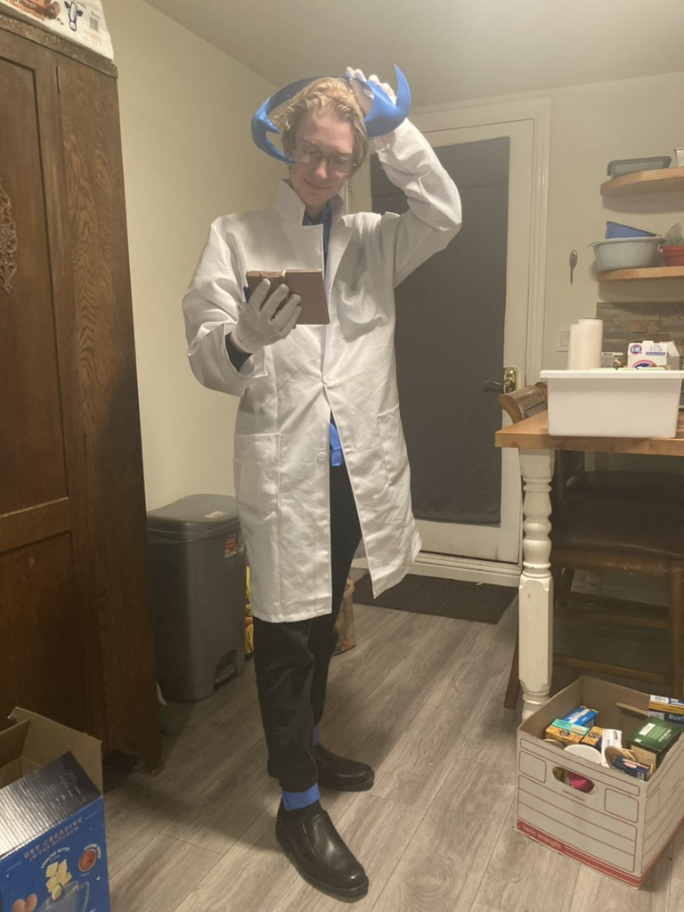

Sam's Portfolio

About Me
Hi. I'm Sam, a 4th year Game Design Double Major (both AGPM and CS:GD) here at UCSC. I also compose music on the side
Hi. I'm Sam, a 4th year Game Design Double Major (both AGPM and CS:GD) here at UCSC. I also compose music on the side